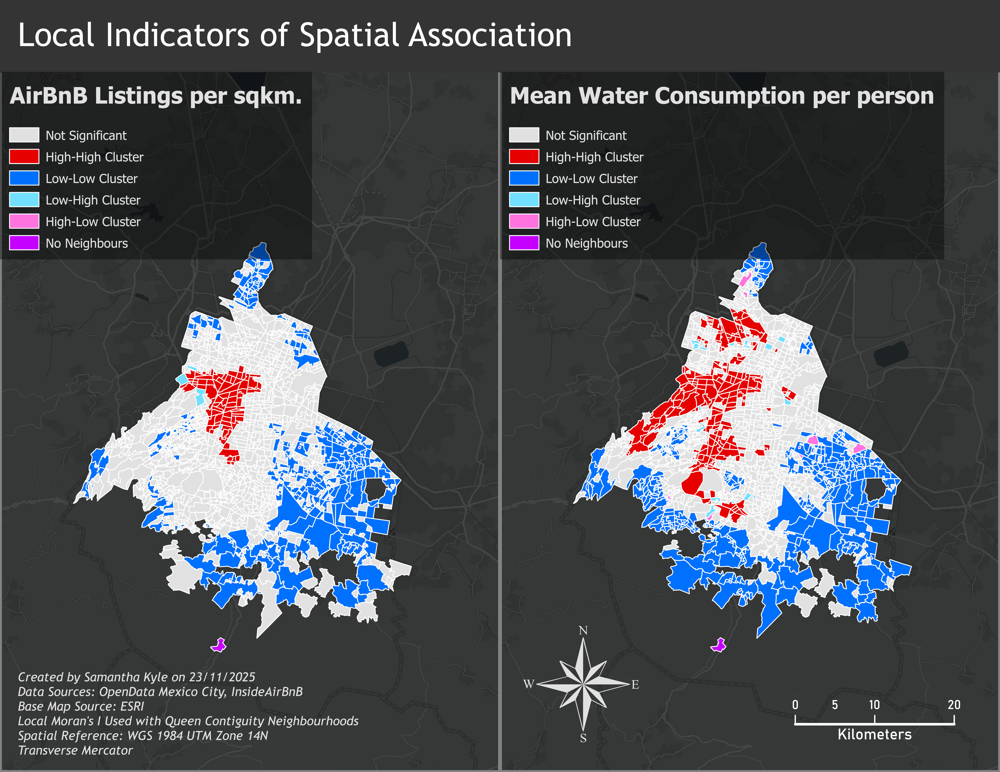

Static Maps and Spatial Statistics
Collection of maps made during my GIS undergraduate program.
Maps made using ArcGIS Pro, ArcGIS Online, ESRI Experience Builder, QGIS, and Python.

Using spatially-constrained K-means to identify clustering of demographic
characteristics and short-term rental density across Toronto FSAs.
Created under the
guidance of Dr. Caitlin Cunningham.

Space-Time Analysis of BikeShare Toronto trip data to locate emerging hot spots. Created under the guidance of Dr. Caitlin Cunningham.

Univariate and Bivariate Moran's I Clusters of NDVI values and median
household incomes across Vancouver, British Columbia.
Created under the guidance of Dr.
Caitlin Cunningham.

This report investigates the relationships between residential water
consumption and AirBnB densities across Mexico City, Mexico to support a broader exploration
of the impacts of 'digital nomads' and 'expatriates' on Mexico City's historic droughts.
Created under the supervision of Dr. Caitlin Cunningham.

Using Colombia's national survey on public service provision, this map
highlights the interconnectedness of water and waste management deprivation as compounding
environmental risks in the country's peripheries.
Created under the supervision of Dr.
Caitlin Cunningham.

This visual supports a policy suggestion for open-area cordon tolling of Toronto's downtown streets to mitigate congestion and gridlock.

Suitability analysis on home buying preferences combining remote-sensing tools, DEM data, and raster and zonal statistics to create heat map of location desirability.